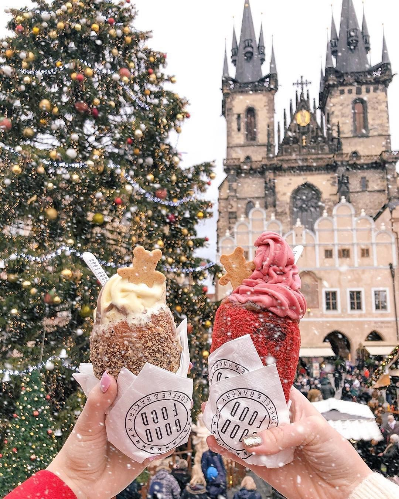
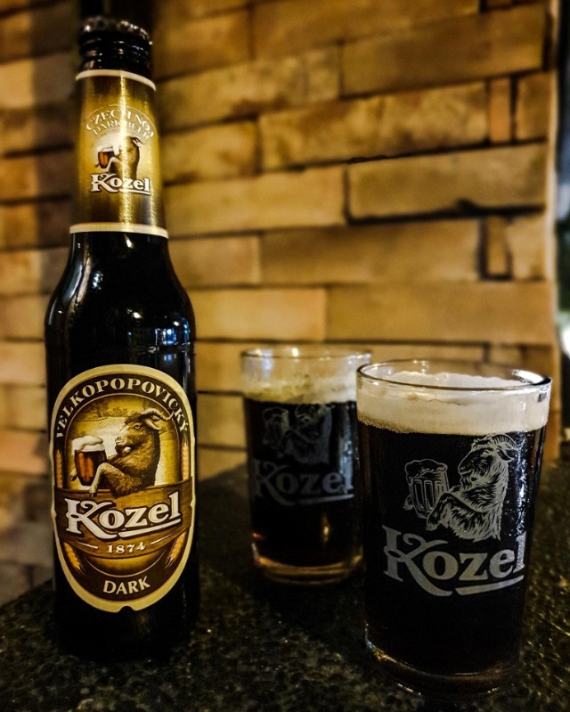

Σκεφτείτε μια όμορφη πόλη τα Χριστούγεννα... Θα χαρακτηρίζατε την πρώτη εικόνα που σας έρχετε στο μυαλό λαμπερή, φαντασμαγορική, μαγική και χιονισμένη, σωστά; Λοιπόν, αυτά τα επίθετα περιγράφουν ακριβώς την Χριστουγεννιάτικη Πράγα!
Την περίοδο των γιορτών η «μητέρα των πόλεων» λάμπει όσο σε καμία άλλη εποχή του χρόνου. Το κρύο κλίμα, τα χριστουγεννιάτικα έθιμα και εδέσματα και η ζεστή ατμόσφαιρα που δημιουργείται θα σας βάλουν για τα καλά σε γιορτινή διάθεση!
Τα κλασικά γιορτινά χρώματα –πράσινο, λευκό, κόκκινο και χρυσό– πρωταγωνιστούν στον διάκοσμο των δημόσιων χώρων. Η πόλη βάζει τα γιορτινά της, στολίζει κάθε γωνιά της, με σημείο αναφοράς την κεντρική πλατεία της Παλιάς Πόλης και το Κάστρο, όπου στήνεται το μεγαλύτερο χριστουγεννιάτικο δέντρο όλης της Τσεχίας. Οι υπαίθριοι πάγκοι των χριστουγεννιάτικων αγορών σας περιμένουν φορτωμένοι με χειροποίητα στολίδια, κεριά, κοσμήματα, κεραμικά αλλά και τοπικές σπεσιαλιτέ!
Αυτές τις μέρες, φαγητά και γλυκά θα έχουν την τιμητική τους, με πρωταγωνιστές τα παραδοσιακά μπισκότα, τα γλυκά τρντέλνικ (trdelník) που μοιάζουν με γεμιστά κρουασάν, σε κυλινδικό σχήμα. Θα δοκιμάσετε επίσης δίπλες με βατόμουρα, τα πικάντικα λουκάνικα (klobása) και τις ξανθές ή μαύρες μπίρες. Μερικές από αυτές θα ανακαλύψεις σε κιόσκια και μπυραρίες, στις πλατείες Old Town Square, Wenceslas Square, Náměstí Republiky, Náměstí Míru, Vyšehrad.
|  |  |
Οι πιο δημοφιλείς αγορές βρίσκονται στην Πλατεία της Παλιάς Πόλης και στην Πλατεία Βέντσεσλας (Wenceslas), που απέχουν περίπου 5 λεπτά με τα πόδια η μία από την άλλη. Υπάρχουν όμως και άλλες μικρότερες, που επίσης αξίζουν την προσοχή σας, όπως στην Πλατεία Δημοκρατίας και στην πλατεία μπροστά από τη Βασιλική του Αγίου Γεωργίου, στο Κάστρο.
Θα ακούσετε γιορτινές μελωδίες, θα μυρίσετε λαχταριστά χριστουγεννιάτικα αρώματα και θα γευτείτε ζεστό κρασί… Κι αν βρεθείτε στην Πλατεία της Παλιάς Πόλης στις 5 Δεκεμβρίου θα δειτε τον Santa Claus – Άγιο Νικόλαο να μοιράζει δώρα στα παιδάκια, με τη συνοδεία ενός αγγέλου και ενός διαβόλου, σύμφωνα με το έθιμο.
Την Παραμονή Πρωτοχρονιάς η παράδοση θέλει το γιορτινό τραπέζι να συνοδεύουν οι φακές! Ναι οι φακές, γιατί φέρνουν πλούτο! Αντίθετα η απουσία των πουλερικών είναι αισθητή, αφού, σύμφωνα με την παράδοση, προκαλούν ατυχία για τον επόμενο χρόνο. Τελευταίο ραντεβού της χρονιάς στον λόφο Petrin ή σε μια από τις γέφυρες Legii, Cechuc, Manesuv, όπου θα αποχαιρετίσετε τον παλιό χρόνο και θα υποδεχτείτε τον νέο συντροφιά με πυροτεχνήματα σε ένα μοναδικό περιβάλλον!
Βεβαίως κατά τη διαμονή σας μην παραλείψετε να επισκεφτείτε τα μοναδικά αξιοθέατα και να δοκιμάσετε τις νοστιμιές της Πράγας!